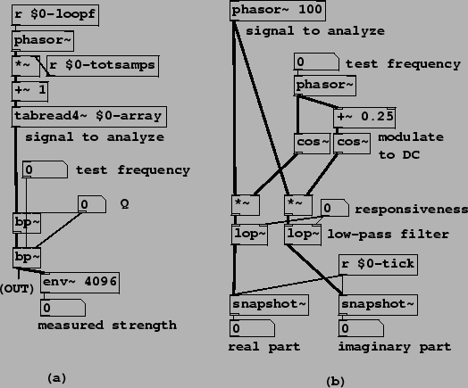

Example H06.envelope.follower.pd shows a simple and self-explanatory realization of the envelope follower described in Section 8.4.2. An interesting application of envelope following is shown in Example H07.measure.spectrum.pd (Figure 8.30, part a). A famous bell sample is looped as a test sound. Rather than get the overall mean square power of the bell, we would like to estimate the frequency and power of each of its partials. To do this we sweep a band-pass filter up and down in frequency, listening to the result and/or watching the filter's output power using an envelope follower. (We use two band-pass filters in series for better isolation of the partials; this is not especially good filter design practice but it will do in this context.) When the filter is tuned to a partial the envelope follower reports its strength.
|  |
Example H08.heterodyning.pd (part (b) of the figure) shows an alternative way of finding partial strengths of an incoming sound; it has the advantage of reporting the phase as well as the strength. First we modulate the desired partial down to zero frequency. We use a complex-valued sinusoid as a modulator so that we get only one sideband for each component of the input. The test frequency is the only frequency that is modulated to DC; others go elsewhere. We then low-pass the resulting complex signal. (We can use a real-valued low-pass filter separately on the real and imaginary parts.) This essentially removes all the partials except for the DC one, which we then harvest. This technique is the basis of Fourier analysis, the subject of Chapter 9.